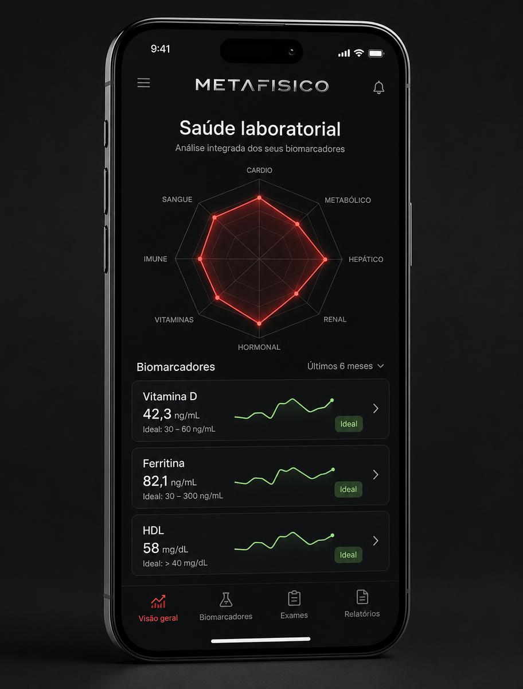
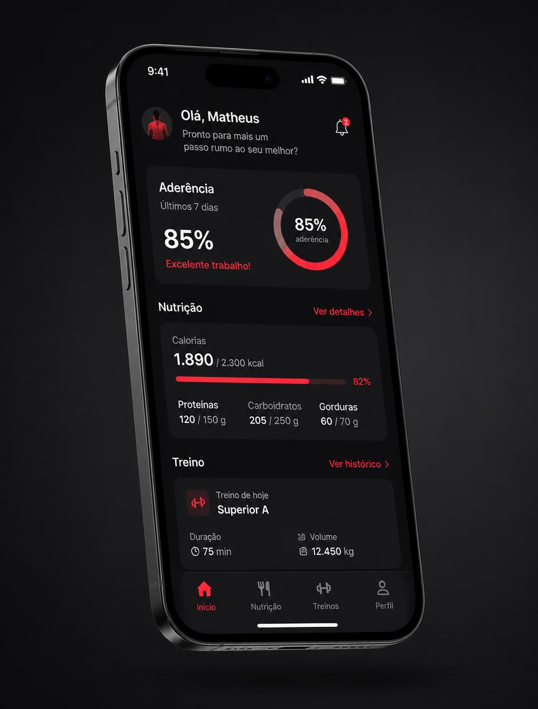
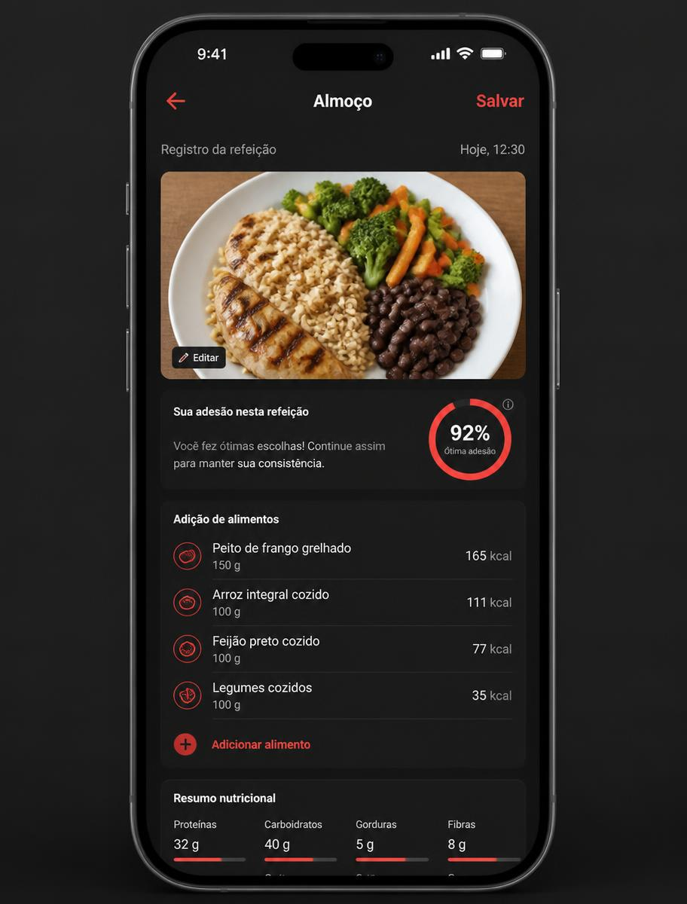
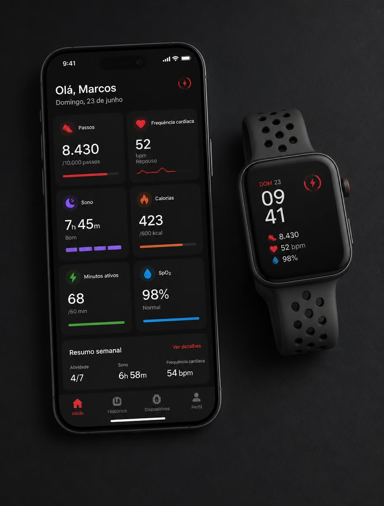
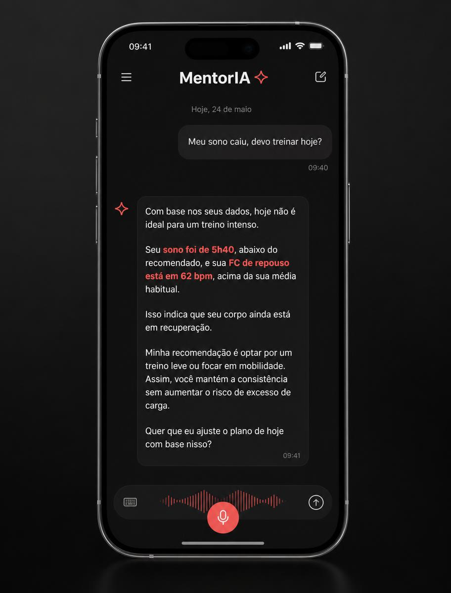
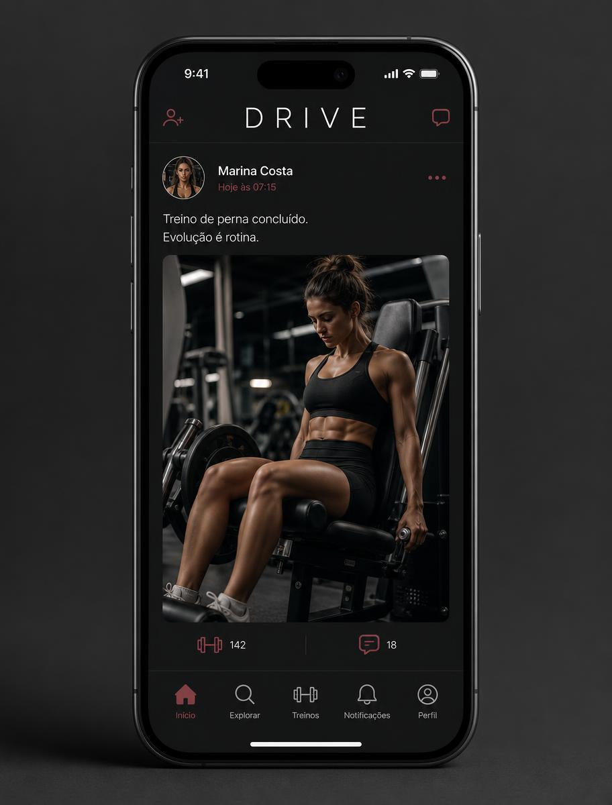

Seu corpo em dados.
Sua evolução em rotina.
O METAFISICO é um ecossistema de saúde e performance que une nutrição, suplementação, treino, exames laboratoriais e os sinais do seu smartwatch em um único organismo digital — interpretado pela MentorIA.


Três planos vivos, recalculados com você
Nada é entregue e esquecido. Cada refeição registrada, cada treino concluído e cada exame enviado reescreve o próximo passo do seu programa.
Nutrição inteligente
Plano alimentar montado para o seu corpo, rotina e objetivo — com substituições por grupo de alimento a um toque, sem sair da meta.
Suplementação precisa
Protocolo com dose, horário e finalidade explicada. Nada genérico: cada item existe por um motivo nos seus dados.
Treinos progressivos
Sessões com carga, séries e execução animada. O check-in de cada treino realimenta o plano da semana seguinte.

Uma foto vale por um diário alimentar
A cada refeição, o app pede uma foto do prato. A MentorIA reconhece os alimentos, compara com o que foi prescrito e devolve um anel de aderência em tempo real — sem planilhas, sem contar gramas na mão.
- Fotos do corpo a cada 30 dias montam a sua linha do tempo física.
- Atualização semanal de peso com lembretes inteligentes.
- Badges de conquista por ciclo: SPARK, FORGE, TITAN e OLYMPIA.
Seu smartwatch conversando com o seu plano
Sincronização nativa com Apple Health e Health Connect: passos, frequência cardíaca de repouso, sono, calorias, minutos ativos, SpO₂ e variabilidade cardíaca chegam ao painel Parâmetros automaticamente.
Dormiu mal? O treino do dia é ajustado. FC de repouso subiu? O ecossistema avisa antes que o cansaço vire lesão.

Seus exames deixam de ser um PDF esquecido
Envie o PDF ou a foto do exame. A leitura multimodal extrai cerca de 40 biomarcadores, calcula um score por sistema — cardiovascular, metabólico, hepático, renal, hormonal, vitaminas, imunológico e hematológico — e desenha o seu Radar de Saúde.
- Tendências com faixa de referência e variação entre exames.
- Insights de risco e recomendações práticas por marcador.
- Lembrete trimestral para manter o histórico vivo.
O agente que conhece o seu corpo pelos seus dados
Pergunte por texto ou por áudio: “posso trocar o jantar?”, “meu sono caiu, devo treinar hoje?”, “o que meu último exame mostrou?”. A MentorIA responde cruzando plano, aderência, fotos, wearable e biomarcadores — não é um chat genérico, é o seu histórico falando.


Comunidade que também é dado de evolução
O DRIVE é a rede social do ecossistema METAFISICO. Publique treinos, conquistas e rotina; interaja por mensagens diretas, comentários e reações. Cada post alimenta a leitura de contexto e humor da MentorIA sobre a sua jornada.
Uma conta só: entrou no METAFISICO, o DRIVE já é seu.
Baixe o app e comece hoje
Todo o ecossistema — planos, exames, wearables, MentorIA e a rede DRIVE — vive dentro do aplicativo. Escaneie o QR Code com o celular ou escolha a sua loja abaixo.
Programa Beta em andamento: o acesso pode exigir convite por TestFlight (iOS) ou pelo canal de teste do Google Play (Android).
metafisico.io